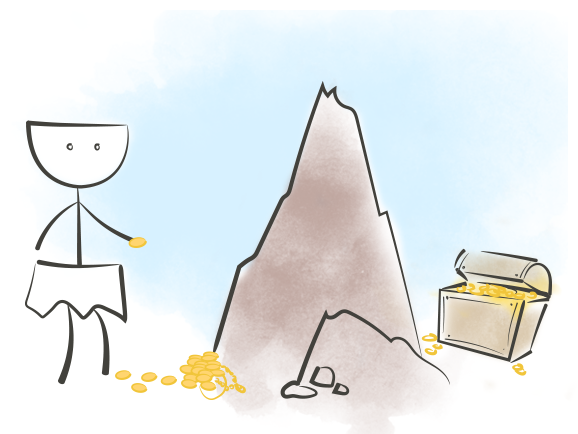

Что же это такое,
когнитивные искажения?
Что такое когнитивные искажения. Petrovna Channel

Мы, разработчики, часто сталкиваемся с проблемами, которые идут вразрез с нашей продуктивностью. Но мы часто игнорируем целостную картину. Некоторые из этих проблем малозаметны, некоторые существенны. Иногда с ними можно как-то справиться, а иногда, к сожалению, нет.
Вместе они формируют что-то вроде замкнутого цикла, и это может привести к длительной потере продуктивности, багам и бесконечному разочарованию.
Если мы сможем минимизировать воздействие одного или нескольких из этих факторов, то сможем сломать и цикл, а остатки нейтрализовать.
подробнееЧто такое когнитивные искажения. Petrovna Channel

Когнитивные искажения
Вы переоцениваете собственные решения, и, как следствие, недооцениваете решения других.
Когнитивное искажение называется так из-за того, что потребители зачастую предпочитают покупать товары, которые они могут собрать сами, а не уже собранные кем-то.
Мы склонны переоцнивать наши собственные решения и недооценивать решения других. Если вы когда-то работали в компании, которая использовала тупой внутренний инструмент вместо более удобного готового решения, вы понимаете, о чём я говорю.
Когнитивные искажения
Вы оптимизируете что-то задолго до того, как в этом появляется необходимость.

Если вы добавите аэродинамический спойлер к своему старому автомобилю вместо ремонта мотора, то автомобиль не станет быстрее.
Отличный пример: писать максимально подтюненный и высокопроизводительный код для всего лишь экспериментального проекта.

Когнитивные искажения
Вы даёте более высокую оценку тем событиям, которые произошли недавно, и недооцениваете более старые.
Часто это искажение настигает нас, когда нужно решение проблемы и… о! Мы как раз только что решили подобную проблему! Давайте использовать это же решение, потому что оно сработало, и мы помним как!
Вы замечаете, что пользуетесь теми же рабочими методиками раз за разом? Если да, возможно, вы смотрите на разные проблемы под одним и тем же углом.
Когнитивные искажения
Вы гонитесь за немедленной маленькой выгодой и игнорируете более крупную, недоступную сейчас, но доступную в будующем.

Вы когда-нибудь откладывали написание теста? Ловили себя на использовании клавиш-стрелок в Vim? Поздравляю, у вас наблюдается гиперболическое обесценивание.
Немедленная выгода от использования чего-то быстродоступного значительно смягчает боль, которую нужно перетерпеть, чтобы усвоить правильный синтаксис для перемещения на нужную строчку. Но как только вы поймёте как перемещаться быстрее, выгода в будующем намного выше. В итоге вы сохраните много времени.

Когнитивные искажения
Неправильно рассчитывать время необходимое для завершения задачи
Одно из искажений, которое должно признать большинство из нас. И менеджеры проекта, и сами пользователи продукта — все склонны ставить сроки, в которые невозможно закончить запланированное.
Это отлично выражается в старом афоризме:
Первые 90% готового кода отнимают первые 90% времени разработчика. Оставшиеся 10% отнимают вторые 90% времени разработки.